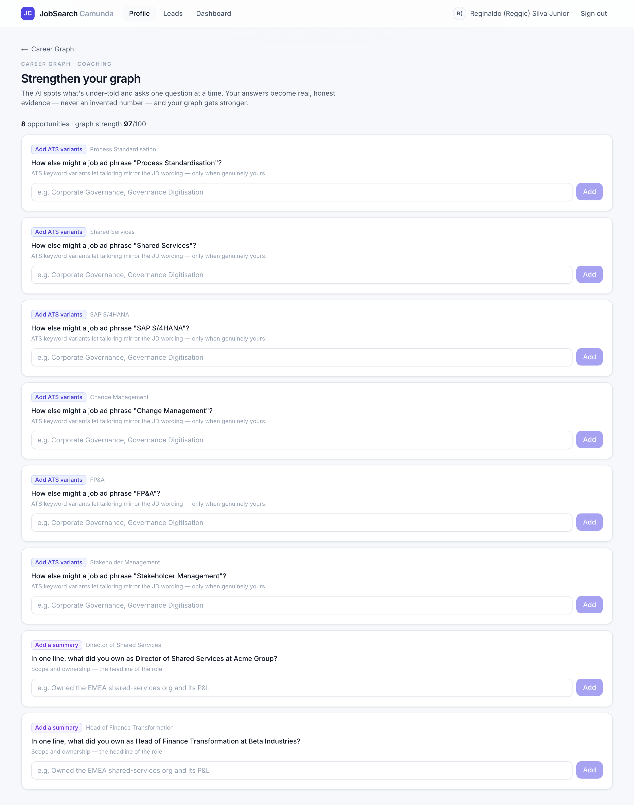
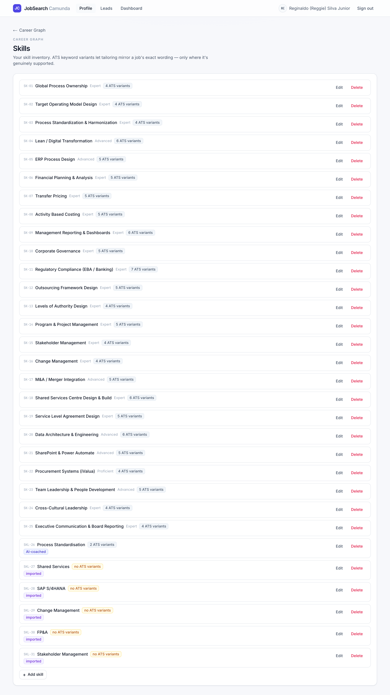

Senior people chronically under-tell: they omit the metric, the scope, the keyword. O3 spots those gaps and asks one question at a time. Your answers become real, honest evidence — and the graph gets stronger. Every node now shows where it came from.
Stories without a metric, skills without ATS variants, roles without a summary — deterministically.
A targeted, plain-language prompt — and a note on why it matters.
Your answer is added to the graph (tagged AI-coached) — a metric only if you gave a number.
| Kind | Found when | The question | Becomes |
|---|---|---|---|
| metric | a story has no quantified result | “What was the measurable impact of …?” | a new result (with the number, if real) |
| ats | a skill has no ATS variants | “How else might a job ad phrase …?” | keyword variants on the skill |
| summary | a role has no summary | “In one line, what did you own as …?” | the position’s summary |


source.
Hand-entered evidence is plain; imported nodes wear an imported badge; anything the coach
touched wears AI-coached (further down this list). You can always audit how a claim entered your graph —
exactly the trust generic CV tools can't offer.A suggestEnrichments LLM pass would rank and phrase them more naturally and spot subtler gaps — wired the same runStructured way when a key is available.
Mission control flags “Core requirement · Weak match” during tailoring; those should deep-link straight into a coaching prompt. Not wired yet.
Low-confidence imported nodes are great coaching candidates (“is this right?”). The data is captured; the prioritisation isn’t.
Competences, attributes, and thin stories (few actions) could also be coached. The metric parser is deliberately simple.
docs/phases/O3.md · code in lib/coaching.ts,
app/actions/coaching.ts, components/coach-panel.tsx.
Screenshots are live captures (mock-LLM mode); test evidence was removed afterwards.